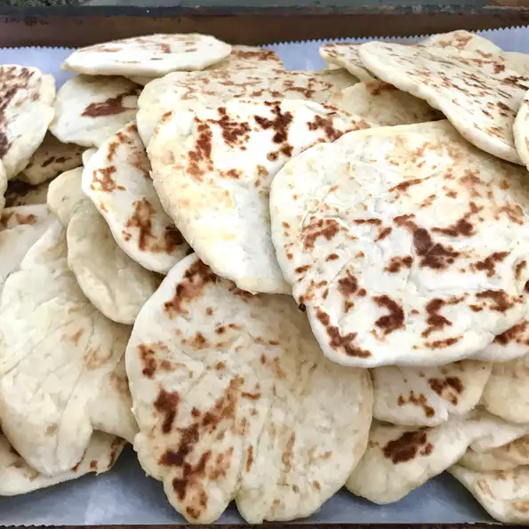

Naan

What is a Naan?
Naan (pronounced nahn) is an oven-baked, leavened bread that is stuffed and flavored in a variety of ways. An essential part of South and Central Asian cuisine, naan is easy, affordable, and makes the most of pantry ingredients you already have on hand.
Flour, yeast, milk, and butter make a tender dough that's simply seasoned with garlic and salt, but there is a wide array of naan bread flavors. You'll find everything from coconut and raisin-stuffed bread to saucy lamb-topped naan in restaurants and home kitchens around the world.
How to make Naan?
Making delightfully soft homemade naan is easier than you think. You'll find the full recipe below with step-by-step instructions, but here's what you can expect when you make this top-rated recipe:
Ingredients
- 1 (.25 ounce) package active dry yeast
- 1 cup warm water
- ¼ cup white sugar
- 3 tablespoons milk
- 1 large egg, beaten
- 2 teaspoons salt
- 4 ½ cups bread flour
- 2 teaspoons minced garlic (Optional)
- ¼ cup butter, melted
Directions
- Dissolve yeast in warm water in a large bowl. Let stand about 10 minutes, until frothy.
- Meanwhile, generously oil a large bowl.
- Stir sugar, milk, egg, and salt into the yeast mixture. Mix in enough flour to make a soft dough.
- Knead dough on a lightly floured surface until smooth, 6 to 8 minutes.
- Place dough in the prepared oil, cover with a damp cloth, and let rise until doubled in size, about 1 hour.
- Punch down dough on a lightly floured surface, and knead in garlic. Pinch off small handfuls of dough about the size of a golf ball; you should have about 14. Roll each piece into a ball and place on a tray. Cover with a towel, and allow to rise until doubled in size, about 30 minutes.
- Meanwhile, preheat a large grill pan over high heat.
- Roll each piece of dough into a thin circle.